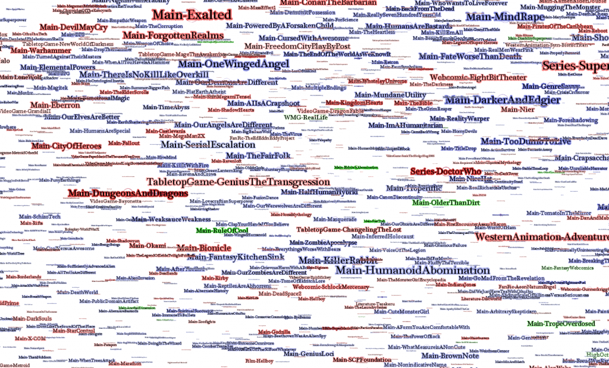
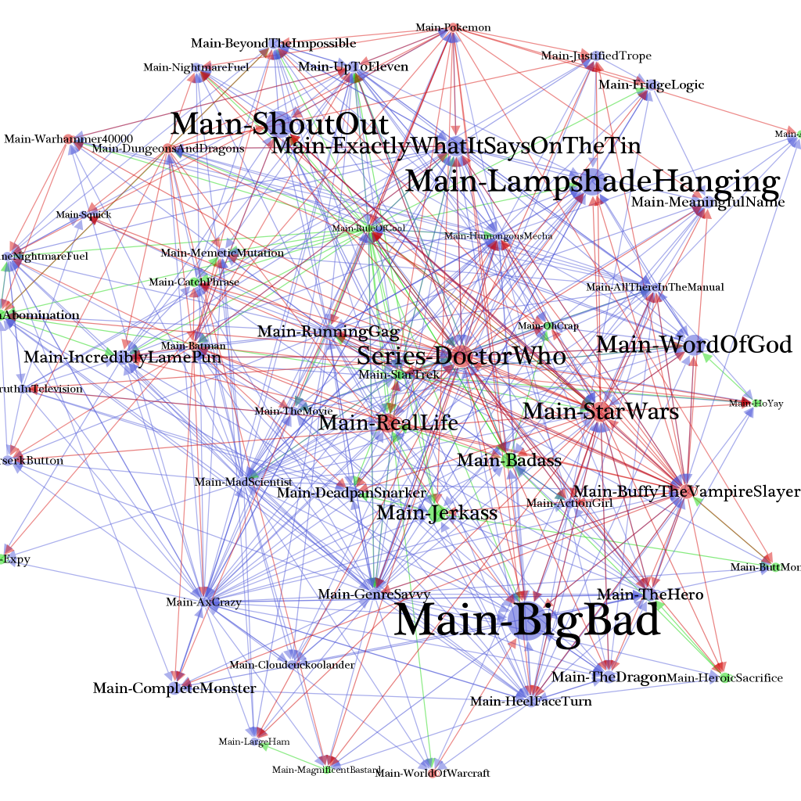
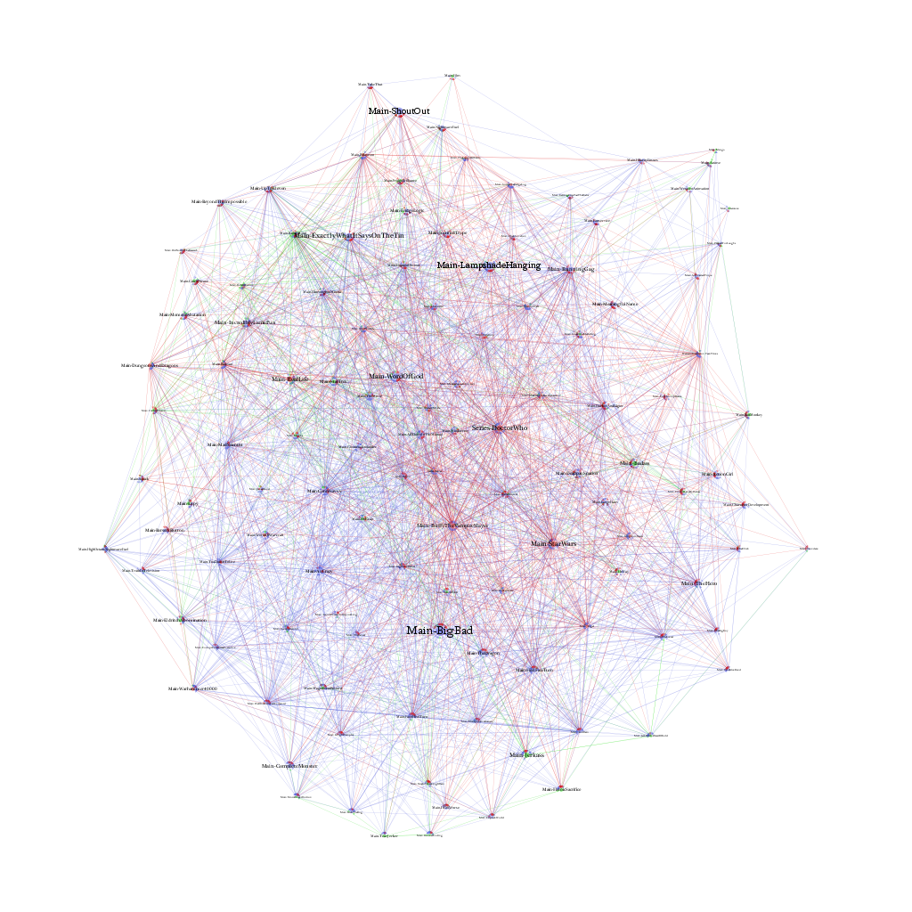
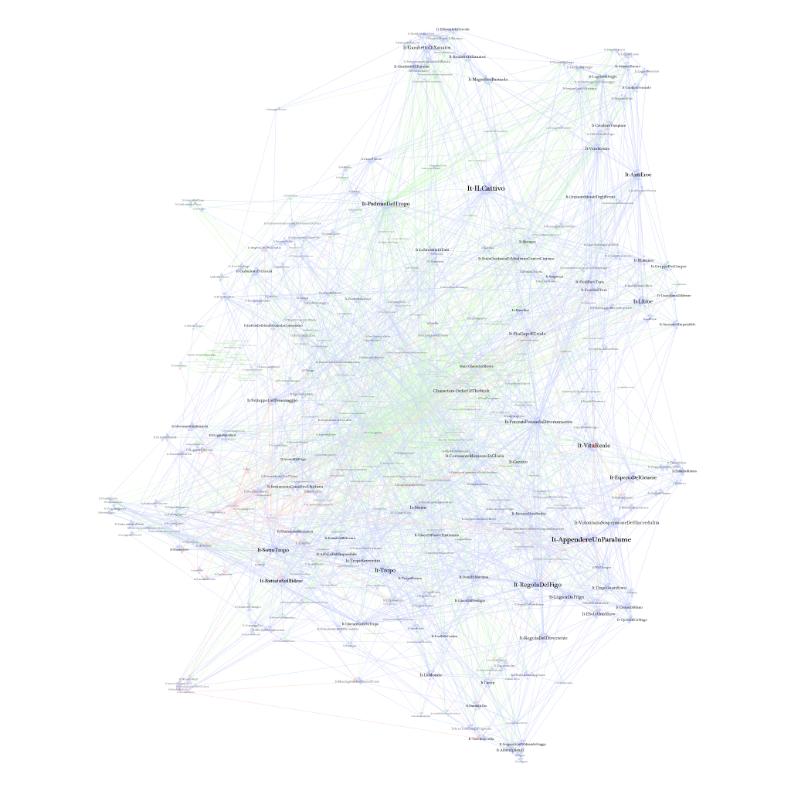

Part 2: Trope (but not Troper) Communities
Part 3: If you liked Dwarf Fortress, you’ll love Twilight: Breaking Dawn
Example of Thematic Relationships
HP Lovecraft popularized a certain type of malevolent force, something so massive and powerful and unconcerned and out-of-scale with humanity that we could not even understand the whole of it. Instead, his characters would–before inevitably going mad–only experience a small portion of these beings, typically some kind of horrid extrusion into our reality. There is much that these Eldritch Abominations have in common with the kind of massively peer-produced content that floats like icebergs in the Internet. Wikipedia, both prototype and archetype, showed how large and important, but also arcane and unseemly, these works could be. Far smaller and not as well known, but still one of these icebergs, is TV Tropes.

The success of Wikipedia spawned many Wikipedia-like enterprises–the road is littered with those that aimed at replicating Wikipedia’s core mission, such as Knol and Citizendium, as well as attempts at using the wiki format for less structured and less staid content, such as the now-moved-to-.ch Encyclopedia Dramatica. But TV Tropes seems to have found a niche, and while it does not have the millions of articles that Wikipedia has, nor the top 10 Alexa ranking, it holds enough mind-share to warrant a reputation for its addictive quality.
Tropes, per the usage of the term on TV Tropes, can refer to most any element that appears within a story as well as the elements of story particularly as they relate to a modern culture that not only reads or watches such a thing but also actively theorizes about it, writes fiction about it on the Internet, and otherwise feels actively engaged with the work. For example, TV Tropes includes not only the Twist Ending, but also a particular kind of twist ending that is notable not for what happens in the story but for how the story has been framed and is dealt with by the cinema-going community at large.

When I asked the folks who run TV Tropes to give me their database, I actually expected it to be both larger and smaller. Compared to Wikipedia, the actual content is miniscule, with only 23,032 pages of tropes and 26,350 pages of works along with 1831 index pages. But these 50,000 or so pages are connected by over 3.4 million links between them, comprising of links to similar tropes from trope pages to trope pages, links from trope pages to works where the tropes can be found, and indexes that act as a partial level of curation over the entire endeavor. You could see this as a network visualization of pages that point to each other, at least theoretically.


The 54 most central pages on TV Tropes, considering only links between trope, work and index pages. Tropes are in blue, works are in red and indexes are in green. To disambiguate names, the namespace is appended to the trope, index or work name.
But this brings me back to the problem of the Eldritch Abomination. You see, TV Tropes is so densely interlinked, with some pages having thousands of links to them and thousands of links to other pages, that any attempt to visualize more than a trivial piece of it using traditional network visualization results in a giant ball of edges that resembles a well-known entity.


As above, but now showing a whopping .23% of the tropes, indexes and works on TV Tropes.


Just the Italian module of TV Tropes--still less than 1% of all works, indexes and tropes.
The way in which TV Tropes analyzes a wide variety of works, including how modern works interact with an Internet-enabled community, as well as how TV Tropes self-organizes, may prove useful in the analysis of literature and other media. That said, while it may provide some attractive poster options for undergraduates, the visualization of 50,000 nodes and 3.4 million edges from the project would be just one limited view of the unspeakable horror of the thing itself. To step away from the Lovecraftian metaphor and into analogies that Digital Humanities scholars are a bit more comfortable with, the TV Tropes project is like a commons-based form of distant reading, but instead of leveraging Natural Language Processing techniques, it takes advantage of open source processes to distill works into recognizable components. Interestingly, when I asked the administrators of the project what they felt they were doing, one response was:
What we do here? Pattern-spotting. Pattern analysis. Ingredient identification. By that last one, I’m talking about treating fiction the way some folks treat a food they’ve never had before; tasting it and then trying to figure out what all went into making it. “Hmmm, I can taste cinnamon. Or something like cinnamon, anyway. Wait, I don’t think it’s actually cinnamon, but it’s warm like cinnamon. I think it may be … CUMIN? WTH? Cumin with apples? I never would have thought to put those two together. But it works.”
-Madrugada
Which is remarkably similar to the explanation Matt Jockers recently gave for how Topic Modeling works.
Having spent some time grappling with the TV Tropes dataset and speaking to the administrators of the project, it’s my hope that through a series of explorations of this vast network we can better understand the structure of the project and at least some of the patterns within it. I’ll begin in Part II with an overview of the slightly more manageable network of trope-to-trope connections, and then focus in Part III on some of the patterns that arise when examine particular works and tropes. After that, if there’s interest, I may return to the larger network as a whole and lay out some of its general structures both internally and with regard to the larger Internet.
UPDATED: A few folks have asked me to give a better explanation of how the TV Tropes network looks through something interactive. It’s a hard thing to do with any large portion of the network but here is a traversable network made up of the 148 most central indices, works and tropes using the excellent gexfjs library.